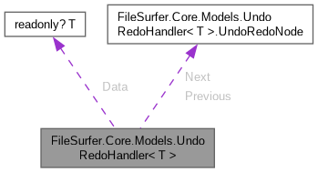
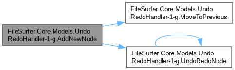
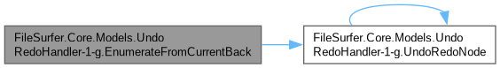
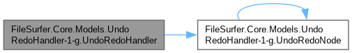
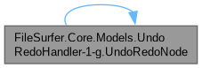
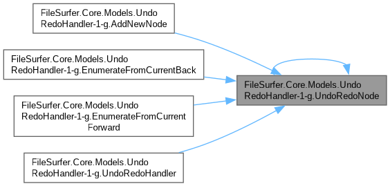

- Generated by
 1.16.1
1.16.1
|
FileSurfer 2.1.2
Cross-platform file manager with support for Git and SFTP
|
Represents a generic undo/redo history chain that supports navigation, insertion, removal, and enumeration around the current position. More...

Public Member Functions | |
| UndoRedoHandler (Action? onCollectionChanged=null) | |
| Initializes a new UndoRedoHandler<T> chain. | |
| void | AddNewNode (T data) |
| Inserts a new node after the current position and discards any forward history. | |
| bool | IsTail () |
| Determines if the current UndoRedoNode is the end of the UndoRedoHandler<T> chain. | |
| bool | IsHead () |
| Determines if the current UndoRedoNode is the beginning of the UndoRedoHandler<T> chain. | |
| T? | GetPrevious () |
| Gets the data of the previous UndoRedoNode in the UndoRedoHandler<T> chain. | |
| T? | GetNext () |
| Gets the data of the next UndoRedoNode in the UndoRedoHandler<T> chain. | |
| void | MoveToPrevious () |
| Moves to the previous UndoRedoNode in the UndoRedoHandler<T> chain. | |
| void | MoveToNext () |
| Moves to the next UndoRedoNode in the UndoRedoHandler<T> chain. | |
| IEnumerable< T > | EnumerateFromCurrentForward () |
| Enumerates items from the current position forward. | |
| IEnumerable< T > | EnumerateFromCurrentBack () |
| Enumerates items from the current position backward. | |
| void | RemoveCurrent (bool goToPrevious) |
| Removes the current UndoRedoNode from the UndoRedoHandler<T> chain. | |
Package Functions | |
| UndoRedoNode (T? data, UndoRedoNode? previous=null, UndoRedoNode? next=null) | |
| Initializes a new node and optionally links it between previous and next nodes. | |
Package Attributes | |
| readonly? T | Data |
| Value stored by this node. | |
| UndoRedoNode? | Previous |
| Previous node in the chain. | |
| UndoRedoNode? | Next |
| Next node in the chain. | |
Properties | |
| T? | Current [get] |
| Returns the data of the current UndoRedoNode. | |
Represents a generic undo/redo history chain that supports navigation, insertion, removal, and enumeration around the current position.
|
inline |
Inserts a new node after the current position and discards any forward history.
| data | Value to store in the newly inserted node. |

|
inline |
Enumerates items from the current position backward.

|
inline |
Enumerates items from the current position forward.
|
inline |
Gets the data of the next UndoRedoNode in the UndoRedoHandler<T> chain.
|
inline |
Gets the data of the previous UndoRedoNode in the UndoRedoHandler<T> chain.
|
inline |
Determines if the current UndoRedoNode is the beginning of the UndoRedoHandler<T> chain.
|
inline |
Determines if the current UndoRedoNode is the end of the UndoRedoHandler<T> chain.
|
inline |
Moves to the next UndoRedoNode in the UndoRedoHandler<T> chain.
|
inline |
Moves to the previous UndoRedoNode in the UndoRedoHandler<T> chain.
|
inline |
Removes the current UndoRedoNode from the UndoRedoHandler<T> chain.
Throws InvalidOperationException if _current is either _head or _tail.
| goToPrevious | When true, moves to the previous node after removal; otherwise moves to the next node. |
| InvalidOperationException | Thrown when _current is _head or _tail. |
|
inline |
Initializes a new UndoRedoHandler<T> chain.
| onCollectionChanged | Optional callback invoked whenever the current position or chain structure changes. |

|
inlinepackage |
Initializes a new node and optionally links it between previous and next nodes.
| data | Value to store in the node. |
| previous | Previous node to link from. |
| next | Next node to link to. |


|
package |
Value stored by this node.
|
package |
Next node in the chain.
|
package |
Previous node in the chain.
|
get |
Returns the data of the current UndoRedoNode.